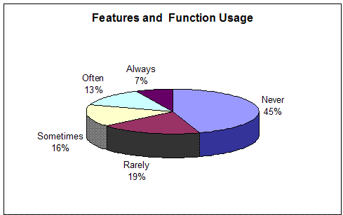

What is an Iteration
An iteration is a set period of time within a project in which you produce a stable, executable version of the product,
together with any other supporting documentation, install scripts, or similar, necessary to use this release. The
executable is demonstrable, allowing the team to demonstrate true progress to stakeholders, get feedback on how they
are doing so that they can improve their understanding of what needs to be done, and how to do it. Each iteration
builds upon the results of previous iteration, and will produce a product increment one step closer to the final
product. Iterations are timeboxed, meaning the schedule for an iteration should be regarded as fixed, and the scope of
the iteration's content actively managed to meet that schedule.
At each iteration, artifacts are updated. It is said that this is a bit like "growing" software. Instead of developing
artifacts one after another, in a pipeline fashion, they are evolving across the cycle, although at different rates.
Iterative development is very disciplined: the iteration length is fixed; the objectives of iterations are carefully
planned; the evaluation criteria are established when each iteration is planned; and the tasks and responsibilities of
participants are well defined. Additionally, objective measures of progress are captured. Some reworking takes place
from one iteration to the next, but this too is done in a structured fashion.
Each iteration should address the most critical risks, and implement the highest-priority work items. This ensures that
each iteration adds maximum stakeholder value, while reducing uncertainty. Iterative development is typically combined
with frequent or continuous integration: as unit-tested components become available, they are integrated, then a build
is produced and subjected to integration testing. In this way, the capability of the integrated software grows as the
iteration proceeds, towards the goals set when the iteration was planned. Regular builds, such as daily or more
frequent builds, let you break down the integration and test issues and spread them across the development cycle. These
issues have often been the downfall of large projects because all problems were discovered at once during the single
massive integration step, which occurred very late in the cycle, and where a single problem halts the whole team.
Why Iterate
The iterative approach has proven itself superior to the waterfall approach for a number of reasons:
-
You are more likely to build an application that addresses user needs. Early specification of requirements often
leads to unused features. The Standish Group has researched thousands of application development projects and has
found that more than 45 percent of features are never used, while another 19 percent are used rarely (see
Figure 2.3). In other words, typically more than half of the development effort is wasted on developing
nonessential capabilities. To avoid this problem, you need to involve the customer in the development project and
use an iterative approach that allows you to implement and validate the capabilities deemed most essential in each
iteration. This approach allows not only early validation of key capabilities but also addition of new capabilities
late in the project.
-
Integration is not one "big bang" at the end of a project. Leaving integration to the end results in time- and
budget-consuming rework. To avoid this, an iterative approach breaks a project down into smaller iterations, each
evolving executable code that is continuously integrated to enable rapid feedback and minimize later revision.
-
Risks are usually discovered or addressed during early iterations. With the iterative approach, risks are more
likely to be identified and addressed in early iterations. As an example, if there is a risk that a stakeholder
will not be happy with the functionality you are developing, iterative development will encourage you to
implement the most essential capabilities partially and demonstrate them to key stakeholders to make sure that you
are on the right track.
-
Your ability to work effectively is fine-tuned. During early iterations, team members are walking through all
lifecycle activities, from requirements capture and test definition to development, implementation, and testing.
Consequently, they can make sure they have the tools, skills, organizational structure, and so on to work
effectively.
-
Management has a way of making tactical changes to the product. Management can make changes to the product along
the way-to compete with other new products, for example. Iterative development allows you to evolve partial
implementations of the end product quickly and use these for quick release of a reduced-scope product to counter a
competitor's move.
-
Reuse is facilitated. It is easier to identify common parts as they are being partially designed or implemented in
iterations than to recognize them at the beginning. Discussions and reviews of the design in early iterations allow
team members to spot potential opportunities for reuse and then develop a mature common code for these
opportunities in subsequent iterations.
-
Defects can be found and corrected over several iterations. This capability results in a robust architecture and a
high-quality application. Flaws are detected in early iterations, rather than during a massive testing phase at the
end. Performance bottlenecks are discovered while they can still be addressed instead of creating panic on the eve
of delivery.
-
Project personnel are better used. Many organizations match their use of a waterfall approach with a pipeline
organization: the analysts send the completed requirements to designers, who send a completed design to
programmers, who send components to integrators, who send a system to testers. These many handoffs are sources of
errors and misunderstandings and make people feel less responsible for the final product. An iterative process
encourages widening the scope of expertise of the team members, allowing them to play many roles and thus enabling
a project manager to make better use of the available staff and simultaneously remove problematic handoffs.
-
Team members learn along the way. The project members have several opportunities within a development cycle to
learn from their mistakes and improve their skills from one iteration to another. More training opportunities can
be discovered as a result of assessing the earlier iterations.
-
The development process itself is improved and refined along the way. The iteration assessment allows the team to
not only look at the project status from a product or scheduling perspective but also analyze what can be improved
in the next iteration in both the organization and the process. One technique for doing so is to hold a
retrospective.

Figure 2.3. Most Features Implemented Are Never or Rarely Used.
According to the Standish Group, an amazing 45 percent of features implemented are never used, while
another 19 percent are used only rarely. If features never used were not implemented in the first place, development
time would be cut in about half. Further, since productivity is typically measured in the form of lines of code or
functionality delivered, this improvement would not register as a productivity increase using standard productivity
measures.
Iteration Length
Iterations are typically 4 weeks long, although some teams will work with iterations as short as a week or as long as
six weeks. For factors driving iteration length, see Table 1.
Table 1. Factors Impacting Iteration Length.
|
Factors leading to reduced iteration length
|
Factors leading to increased iteration length
|
|
Small teams
|
Large teams
|
|
Co-located teams
|
Distributed teams
|
|
Strong configuration management system
|
Poor configuration management system
|
|
Dedicated, full-time resources
|
Matrixed or part-time resources
|
|
Automated testing
|
Lack of automated testing
|
|
Integrated tool environment
|
Absence of good automation and tool integration
|
|
Team experienced with iterative development
|
Team inexperienced with iterative development
|
|
Fast decision making
|
Policies and bureaucracy preventing fast decision making
|
|
Unclear requirements
|
Well-understood requirements
|
|
Unclear or brittle architecture
|
Well-defined and stable architecture
|
|
New and poorly understood technology
|
Well-understood technology
|
|